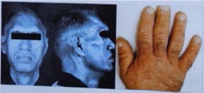
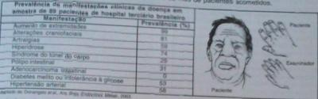

Mulher, 42 anos ao verificar fotos de seu casamento, ocorrido há 20 anos, percebeu que seu rosto havia mudado, com o aumento de seu queixo e fronte, assim como suas mãos haviam aumentado de tamanho. Ao procurar a UBS, perguntou ao médico se a rouquidão de sua voz, espessamento dos lábios e aumento da língua estavam associados às mudanças percebidas. Com este quadro clínico a hipótese diagnóstica é:
Paciente de 51 anos, do sexo masculino, com diagnóstico de diabetes mellitus tipo 2 e HAS, há cinco anos. Durante consulta de rotina com endocrinologista, apresentou queixa de artralgia em várias articulações associada a hiperidrose e, ao exame físico, presença de discreto prognatismo, o que suscitou hipótese diagnóstica de acromegalia, confirmada posteriormente com a dosagem de GH basal de 7,6 ng/mL (VR homem: inferior ou igual a 3,00) e IGF-1 de 446 ng/mL (VR 50 a 54 anos: 48 a 209). A ressonância magnética revelou massa selar sólida, de 1,9 cm em seu maior diâmetro, sem expansão extrasselar, nem compressão de quiasma óptico. Nesse caso, qual tratamento primário de escolha deve ser indicado para esse paciente?
Durante uma consulta médica em um posto de saúde, observa-se um paciente, masculino, 42 anos, apresentando diabetes mellitus e hipertensão arterial sistêmica de difícil controle. Notamos a presença de fácies de característica grosseira, protuberância da mandíbula, lábios e sobrancelhas grossas e pavilhão auricular aumentado. A alteração semiológica NÃO esperada em um exame mais minucioso é:
Homem, 52 anos, refere hiperidrose e artralgia generalizada há 5 anos, galactorreia e disfunção erétil há 1 ano. Há 5 meses com cefaleia diária e alteração de campo visual. Diabetes mellitus e hipertensão arterial há 4 anos e síndrome de apneia obstrutiva do sono há 3 anos. Exame físico: peso = 92 kg; estatura = 1,85 m; circunferência abdominal = 113 cm; FC = 80 bpm; PA = 140 X 90 mmHg. Restante nas figuras abaixo. Qual é o exame que confirma a hipótese diagnóstica mais provável?

Hormônio do crescimento GH O uso crescente de agentes anabólicos por indivíduos que praticam exercícios com objetivo de melhorar sua performance e aumentar o ganho de massa muscular vem preocupando a sociedade médica. O uso injetável da somatotro na humana está associado a efeitos adversos graves. Assinale a alternativa que contém efeitos adversos típicos dessa substância:
Paciente do sexo masculino foi submetido a TC de crânio devido a cefaleia, sendo sugerido imagem em região hipo sária. Realizada RM de hipó se que evidenciou lesão de 0,5 cm à direita da hipó se, sem extensão extra-hipo sária. Durante avaliação com endocrinologista, o paciente encontrava-se assintomático, com exame físico normal, sem antecedentes pessoais patológicos e sem uso de medicações. De acordo com as recomendações da Endocrino Society, o seguimento do paciente deverá ser feito com:
As opções a seguir apresentam manifestações da Acromegalia, à exceção de uma. Assinale-a.
Qual o achado semiológico mais característico encontraríamos no paciente com uma massa hipofisária e hipotalâmica?
Paciente do sexo feminino, 48 anos de idade, procura médico da família por apresentar amenorreia, fogachos, sudorese e fortes dores articulares (pés, mãos e articulação têmporo-mandibular) nos últimos seis meses. Refere diagnósticos recentes de hipertensão e diabetes, fazendo uso de metformina e losartan regularmente. Nega história familiar de hipertensão e diabetes mellitus. Não é tabagista ou etilista. Ao exame físico, apresenta índice de massa corporal de 24,0 kg/m², dedos de mãos e pés edemaciados e prognatismo. Qual o provável diagnóstico da paciente?
Todas as síndromes abaixo estão associadas à obesidade, EXCETO:
Mulher, 70 anos, com história de 4 meses de síndrome reumatoide com importante acometimento dos ombros. Recentemente com queixas sugestivas de polineuropatia periférica e síndrome do túnel do carpo. O exame físico mostra espessamento sinovial importante nos ombros e nos punhos, equimoses periorbitárias e macroglossia. Dos exames laboratoriais, o fator reumatoide negativo e elevação da creatinina. O diagnóstico mais provável é:
Analise a tabela abaixo, que contém dados relativos à prevalência de manifestações clínicas de determinada doença, e a figura que reproduz o aspecto usual da fácies e da mão de pacientes acometidos. Assinale a alternativa que preenche, CORRETA e respectivamente, as lacunas da frase a seguir: a causa mais comum deste quadro clínico é a presença de um tumor _______. Para confirmar a etiologia, a avaliação hormonal deve incluir dosagem de _______,que se mostrará _______.

Homem de 47 anos comparece com dispneia aos moderados esforços e parestesias nas mãos. Tem diagnóstico de diabetes e hipertensão há 5 anos. Durante o interrogatório por órgãos, o médico descobre crescimento dos pés e mãos, hiper-hidrose, ronco e mudança da voz. No exame físico, há quarta bulha, prognatismo e macroglossia. Qual dos exames abaixo deve ser usado como screening para o diagnóstico desse paciente?
Paciente do sexo masculino, 42 anos, com queixa crônica de hiper-hidrose difusa, artralgias, fadiga e cefaleia. HAS diagnosticada há 10 anos e compensada com losartana 100 mg/dia. Ao exame físico, apresenta: IMC = 21. Face com acentuação dos malares, prognatismo e diastemas. Pele espessada com papiloma cutâneo em dorso e coxa direita. Quirodáctilos tipo ''salsicha''. Hepatomegalia indolor discreta. Bócio difuso (2x VR). Exames iniciais: ecocardiograma = cardiomegalia com hipertro a concêntrica de VE e FE = 78%; FAN = não reagente; USG abdome = hepatomegalia e esteatose leve. Ressonância crânio/sela turca com nódulo 1,5 cm hipocaptante em adeno-hipó se envolvendo seio cavernoso esquerdo e desvio de haste hipo sária. TSH = 2,1 mcUI/ml (VR = 0,35-4,2); T4L = 0,6 ng/dl (0,8-1,76); HGH basal = 20 ng/ml; prolactina = 30 ng/dl (VR até 16 ng/dl); IGF-1 acima do VR para idade. O diagnóstico principal do caso clínico acima é:
Homem, 55 anos, realizou TC de crânio para avaliar cefaleia. Foi detectada a presença de provável microadenoma de 5 mm na hipó se e o paciente mostra-se extremamente preocupado com a possibilidade de ter um tumor cerebral. Avaliação hormonal mostrou-se normal. Qual o próximo passo no manejo desse paciente? Respostas: 1 12